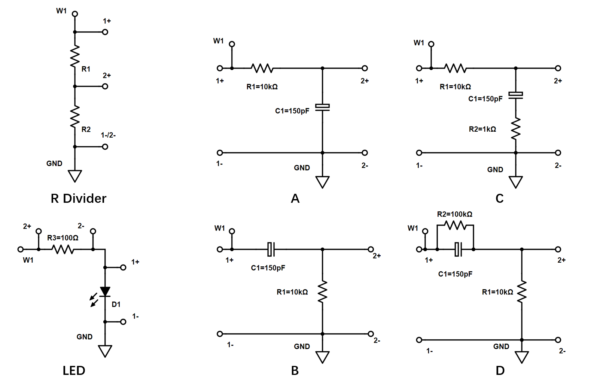

3.1.1. Lab 1: Basic Measurements#
Objective#
Learn various measurement techniques using the ADALM2000
Preparation#
Review the ADALM2000 Introduction Video Series.
In the experiments here we will be using the calibration (Video 3), signal generator (Video 4), oscilloscope (Video 4), and network analyzer (Video 7).
Install the Scopy software on your laptop (Video 2).
Materials#
ADALM2000 Active Learning Module
Laptop with Scopy software installed
Breadboard & Wires
Resistor: 100\(\Omega\), 1K\(\Omega\), 4.7K\(\Omega\), 10K\(\Omega\), 100K\(\Omega\)
Capacitor: 150pF, 4.7nF
LEDs
Experiments#
Circuits Used#

DC Transfer Characteristic of a Resistive Divider Using a Signal Generator and the X-Y Plot of the Oscilloscope#
Build a resistive divider on the breadboard with \(R_1=R2=10K \Omega\).
Generate a ramp signal from 0V-3.5V (100Hz) using the signal generator 1 (W1) and apply it across the resistive divider; connect channel 1 of the oscilloscope across \(R_1 + R_2\) and channel 2 across \(R_2\) (as shown in the figure).
Turn on the X-Y plotting in the oscilloscope. Set X to channel 1 and Y to channel2.
What is the transfer characteristic of the resistive divider? What is the gain?
I-V Transfer Characteristic of an LED Diode Using a Signal Generator and the X-Y Plot of the Oscilloscope#
Build the LED diode test circuit shown in the figure with a 100\(\Omega\) series resistor.
Generate a ramp signal from 0V-3.5V (100Hz) with the generator 1 (W1) and apply it across the resistor-diode; connect channel 2 of the oscilloscope across \(R_3\) to measure the current and channel 1 across the diode \(D_1\) to measure the forward voltage across the diode (as shown).
Turn on the X-Y plotting in the oscilloscope. Set X to channel 1 and Y to channel2.
What features do you observe in the I-V characteristic of the LED? If you have LEDs of different colors, compare their I-V characteristics. You might have to increase the generator voltage depending on the color of the LEDs, look up typical turn-on voltages of LEDs online.
Frequency Response of RC Circuits using the Network Analyzer#
Calculate the frequency response of the various RC circuits; find gain, poles, zeros, …
Use the network analyzer to measure the frequency response; the network analyzer uses oscilloscope channels 1 and 2, make sure to connect them correctly; carefully consider how to set the signal amplitude for the measurement in the network analyzer options.
Compare measurements and calculations.
Step Response of RC Circuits using a Signal Generator and Oscilloscope#
Calculate the step response of the various RC circuits.
Build the RC circuits on your breadboard.
Generate an 0-2.5V 50kHz square wave with signal generator 1 (W1) and apply at the input of the RC networks; attach channel 1 of the scope to the input and channel 2 to the output.
Analyze the measured step responses and compare to your calculations.
Lab Report#
Write a succint lab report that includes screen captures of the key measurements and your interpretation of the data; where applicable, include a brief comparison to theoretical expected behavior, but no need for derivations of that behavior.
You can use a word processor or hand write the report, just make sure it is clearly organized. Clearly mark your group, names, and UNIs on the report.
Submit your report (PDF format) in the assignment in Courseworks. One submission per group.